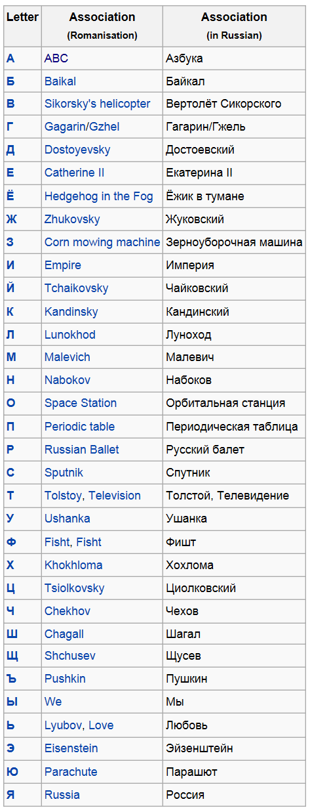

返回主页
Sochi 2014: Winter Olympics opening ceremony（索契冬奥会上俄罗斯的荣誉）

西方知识体系和教育制度
An on-screen video showed 11-year-old Liza Temnikova playing a character named Lyubov (Russian for 'love') reciting the Russian Alphabet.
ABC 俄语字母表
Baikal 贝加尔湖，世界上最大的淡水湖
Sikorsky's helicopter 西科尔斯基，直升机的发明者
Gagarin 加加林，第一个进入太空的地球人
Dostoyevsky 陀思妥耶夫斯基，大文豪
Catherine II 叶卡捷琳娜二世，The Great
Hedgehog in the Fog 雾中的刺猬，1975年动画片
Zhukovsky 茹科夫斯基，俄罗斯航空之父
Corn mowing machine 谷物收割机
Empire （俄罗斯）帝国创建者彼得大帝（Peter the Great）
Tchaikovsky 柴可夫斯基
Kandinsky 康定斯基，现代抽象艺术奠基人
Lunokhod 月球车，前苏联曾两次将月球车送上月球
Malevich 画家马列维奇，至上主义艺术奠基人
Nabokov 纳博科夫，1955年写下著名小说《洛丽塔》
Space Station 空间站，前苏联曾三次发射空间站
Periodic table 元素周期表，1869年门捷列夫首创
Russian Ballet 俄罗斯芭蕾
Sputnik 人造卫星，世界上第一颗人造地球卫星为苏联人的斯普特尼克1号
Tolstoy 托尔斯泰
Ushanka 俄罗斯军人带护耳的棉帽（可怕的冬季）
Fisht 西高加索最高峰
Khokhloma 霍赫洛玛装饰画，俄罗斯民族艺术
Tsiolkovsky 齐奥尔科夫斯基，火箭专家和宇航先驱
Chekhov 契诃夫，俄国的世界级短篇小说巨匠
Chagall 夏卡尔，超现实主义画家
Shchusev 舒谢夫，俄苏著名建筑设计大师
Pushkin 普希金，俄罗斯文学的太阳
We 我们（你和我）
Lyubov（Love）爱
Eisenstein 爱森斯坦，苏联电影导演，《战舰波将金号》
Parachute 降落伞，科特尔尼科夫是背包式降落伞的发明人
Russia 俄罗斯
用德语在互联网上冲浪
日语歌《航迹云》
日本航空技术发展状况
正体中文、英语、日语、韩语、法语、德语、西班牙语、俄语和阿拉伯语
卢浮宫馆藏瑰宝
Childcraft How and Why Library
HOW & WHY 美国经典少儿百科知识全书
世界图书出版公司, 方舟子
中文版（缺V.1诗歌和V.15指南）
1. The World of Animals (2008, V. 4)
2. The World of Plants (2008, V. 5)
3. Our Earth (2008, V. 6)
4. the Universe (2008, V. 7)
5. How Things Work (2008, V. 9)
6. How Does it Happen (2008, V. 8)
7. Shapes and Numbers (2008, V. 10)
8. about You (2008, V. 11)
9. Who We Are (2008, V. 12)
10. Once Upon a Time (2008, V. 2)
11. Art Around Us (2008, V. 3)
12. Celebrate (2008, V. 14)
13. See the World (2008, V. 13)
尽管如此，HOW & WHY 少儿百科 仍然是国内最好的。
德语日语数数
德语日语数数
日语歌《航迹云》
以下为美国2007版目录（注意次序和分类的不同）。
1. Poems and Rhymes
2. Stories and Fables
3. Children Everywhere
4. World and Space
5. About Animals
6. the Green Kingdom (Plants)
7. How Things Work
8. About Us
9. Holidays and Birthdays (Customs)
10. Places to Know
11. Make and Do
12. Look and Learn
13. Mathematic
14. About Me
15. Guide for Parents
The Magic of Words
Mysteries and Fantasies
Conquest of the Sky
贵族妇女读书确保统治地位
The academic Curriculum
The academic Curriculum.（Winchester College, Eton College & Harrow School）2012-8-8
Art. Astronomy. Biology. Business Studies. Chemistry. Classics. Critical Thinking. Design Technology. Economics. English. Etiquette. Geography. Government & Politics. History. History of Art. Information Technology. Mathematics. Modern Languages. Music. Music Technology. Philosophy. Physical Education. Physics. Religious Studies, Divinity, Theology. Sports, Games. Statistics. Theatre Studies (Drama). Speech & Drama（语言和戏剧）
Promoting the best habits of independent thought and learning in the pursuit of excellence;
Providing a broadly-based education designed to enable all boys to discover their strengths, and to make the most of their talents within Eton and beyond;
Engendering respect for individuality, difference, the importance of teamwork and the contribution that each boy makes to the life of the school and the community;
Supporting pastoral care that nurtures physical health, emotional maturity and spiritual richness;
Fostering self-confidence, enthusiasm, perseverance, tolerance and integrity.
贵族本质上是一个军事集团。其教育注重培养人格品性、发展领袖才能、文质彬彬尤重体育（Sports）。在实践中，逐步形成以博雅（liberal arts）为核心的教育体系。优雅（Elegant）
The Ivy League is an athletic conference. Liberal arts are trivium―the verbal arts: logic, grammar, and rhetoric; and quadrivium―the numerical arts: mathematics, geometry, music, and astronomy. Analyzing and interpreting information is also studied. Experience in the liberal arts aids in the formation and expression of well-rounded opinions, via critical thinking.
Great Books, History, Languages (SLA), Linguistics, Literature, Mathematics, Music, Philosophy, Political Science, Psychology, Religious studies, Science, Theater
六艺：礼、乐、射、御、书、数
西方知识体系和教育制度
推荐书目：
Homeschooling Essentials: A Practical Guide to Getting Started
Dianna Broughton, Director of Carolina Homeschooler
Createspace (2012年7月30日)
version:1.0; jobnet@188.com © retter2012.com